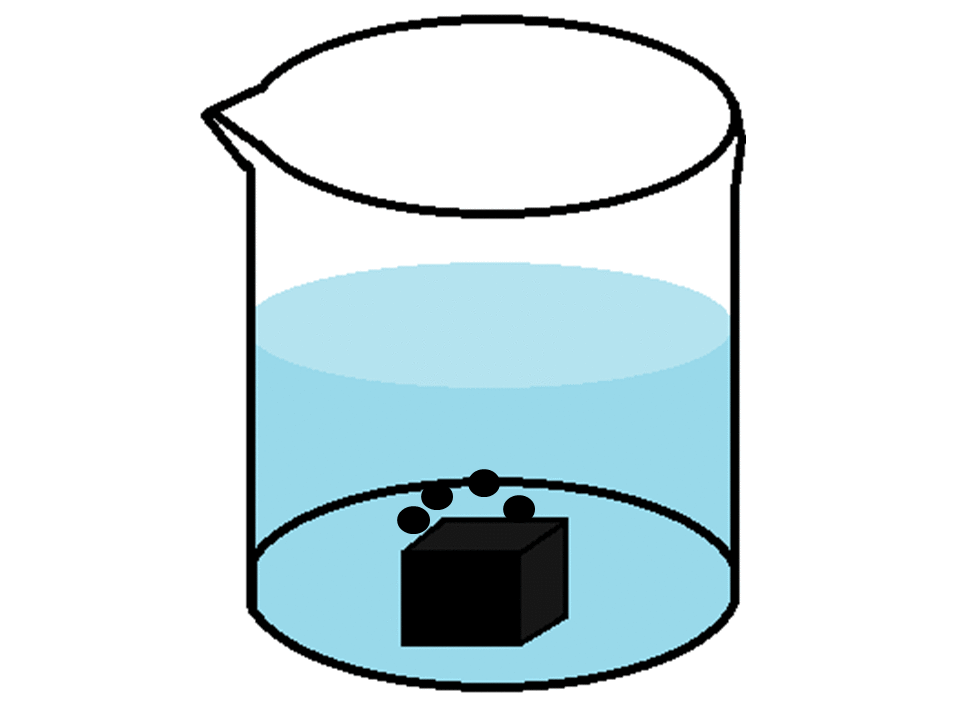
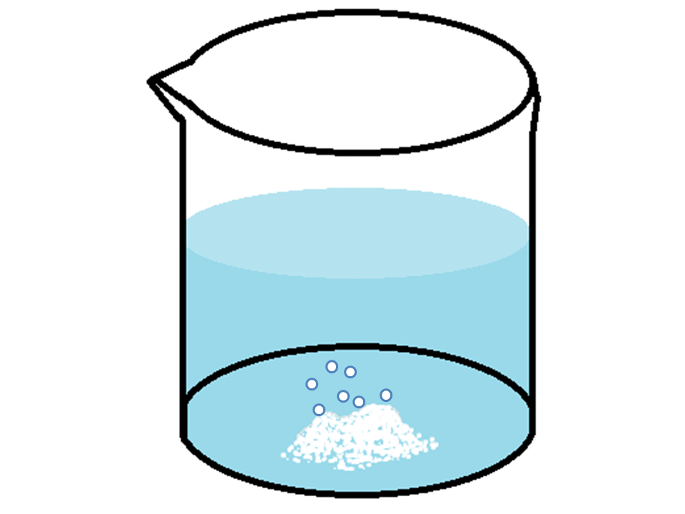

A superfície de contato é um outro fator que influência na velocidade de uma reação. Quando o reagente é sólido, as reações químicas começam na superfície externa para em seguida alcançar seu interior. No GIF acima, o reagente é o Zinco na sua forma sólida. É possível
observar que a reação acontece mais lentamente.
No GIF acima, o reagente é o Zinco em pó. Sua superfície tem mais moléculas disponíveis do que na sua forma Sólida, por estar
em tamanho menor. Então, o tempo para reagir todas a moléculas do reagente será bem menor, ou seja, a reação irá acontecer de forma mais rápida.
 CINÉTICA
CINÉTICA